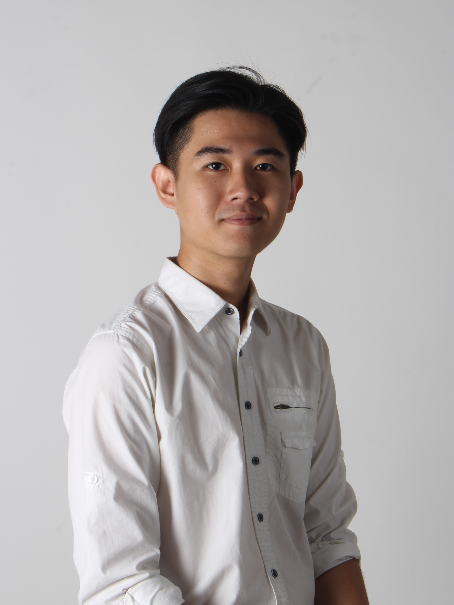

About Me.
I'm a Computer Science undergraduate at BINUS University specializing in Database Technology. I am eager to learn and currently have skills in basic database management, web development, and programming languages. As a BINUSIAN, I have experience as a Freshmen Leader, Freshmen Partner, and the Chairman of Keluarga Mahasiswa Buddhis Dhammavaddhana BINUS University for Alam Sutera area. In my free time, I enjoy doing art-related activities. I believe that technology and art intersect in an exciting ways and I’m eager to show that to everyone through my projects.
Skills
Experience
Education
- Language
Indonesian (Native)
English (Fluent) - Front-End Web Development
HTML | CSS | Javascript - Database Development
MySQL - Programming Language
C | Java | Python - Programming Language
Figma | Canva | Photoshop | CorelDRAW
- HIMTI BINUS
Research and Development Commision Activist (Mar 2022 - Mar 2023) - Keluarga Mahasiswa Buddhis Dhammavaddhana (KMBD) BINUS
Dhamma and Social Division Activist (Jan 2022 - Jan 2023)
Asadha Puja 2566 B.E./2023 Event Division (Apr 2022 - Jul 2022)
DV Care 2022 Project Manager (Aug 2022 - Dec 2022)
KMBD 34th Periode Alam Sutera Chairman (Jan 2023 - present)
- 2015 - 2018
Xaverius 1 Junior High School, Palembang - 2018 - 2021
Xaverius 1 Senior High School, Palembang - 2021 - present
Bina Nusantara University, Jakarta
